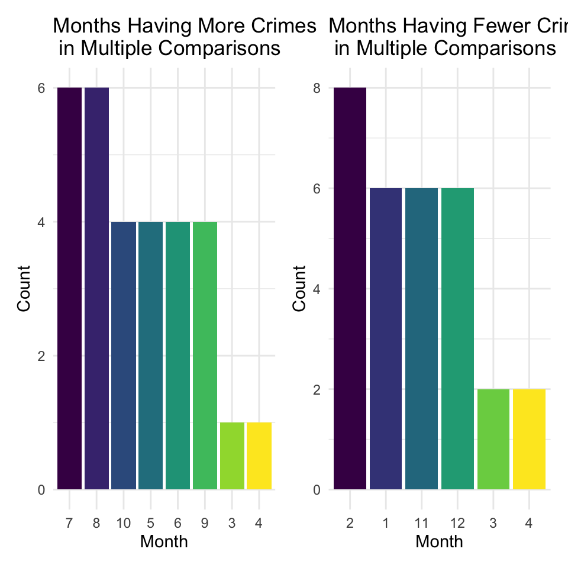
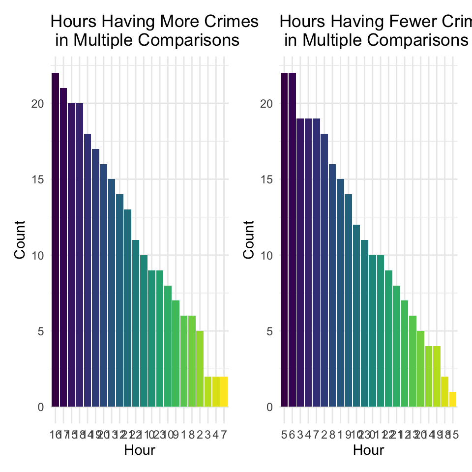
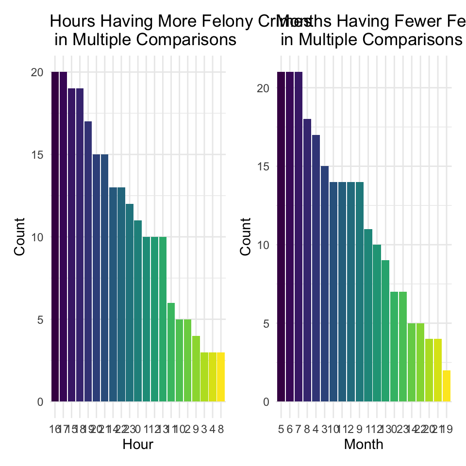
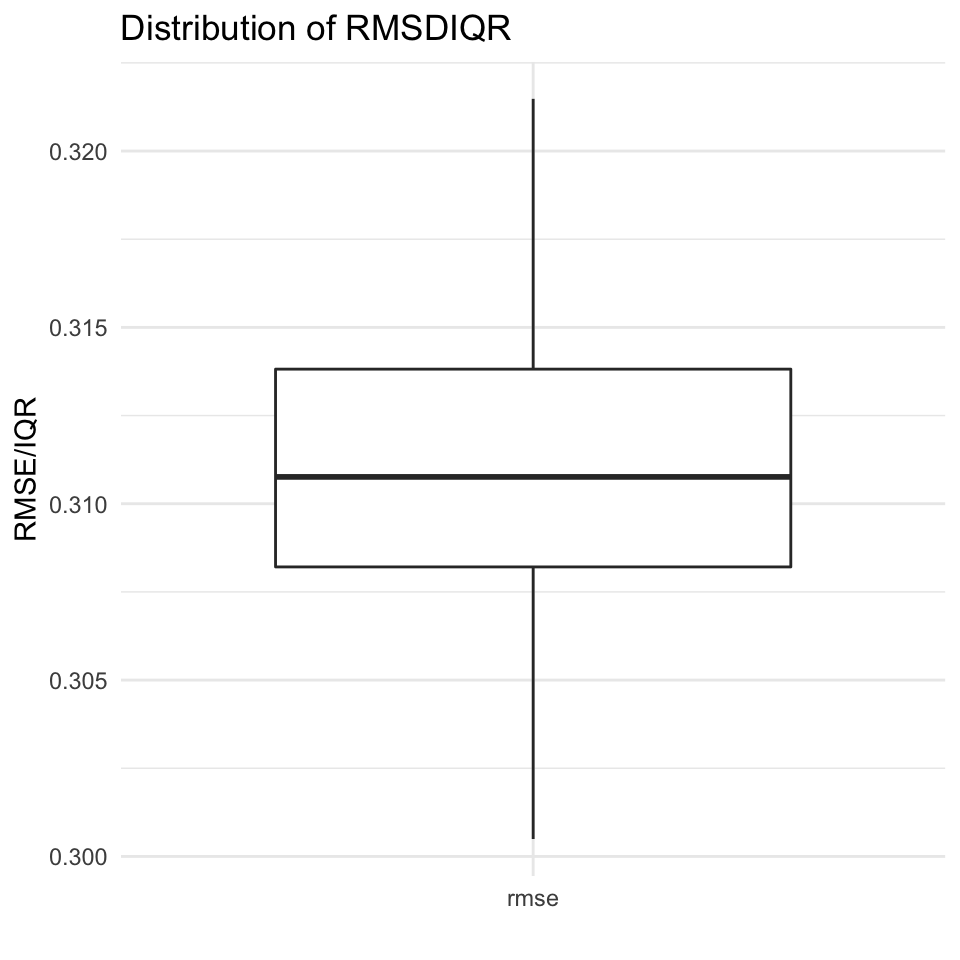

In the EDA part, we see that there exist some pattern in month and time in one day, but is it only random error and fluctation, or there exist a significant difference?
data <- read_csv("../data/full_filter_data.csv")## Rows: 291052 Columns: 20
## ── Column specification ────────────────────────────────────────────────────────
## Delimiter: ","
## chr (11): boro, success_fail, level, description, location, susp_age, susp_r...
## dbl (9): id, year, month, day, hour, minute, second, latitude, longitude
##
## ℹ Use `spec()` to retrieve the full column specification for this data.
## ℹ Specify the column types or set `show_col_types = FALSE` to quiet this message.month_data <- data %>%
group_by(year, month) %>%
summarise(number = n()) %>%
mutate(month = as.factor(month),
year = as.factor(year))## `summarise()` has grouped output by 'year'. You can override using the
## `.groups` argument.aov_model <- aov(number ~ month, data = month_data)
aov_model %>%
broom::tidy() %>%
knitr::kable(digits = 4 )| term | df | sumsq | meansq | statistic | p.value |
|---|---|---|---|---|---|
| month | 11 | 5347936 | 486176.01 | 14.1524 | 0 |
| Residuals | 141 | 4843764 | 34352.94 | NA | NA |
There are very significant difference in the crime numbers between months. Therefore, we utilized Tukey’s method for post hoc tests, to see which months are different.
aov_posthoc <- TukeyHSD(aov_model, conf.level = .95) %>%
broom::tidy() %>%
filter(adj.p.value < 0.05) %>%
arrange(adj.p.value)
aov_posthoc %>%
head(5) %>%
knitr::kable(digits = 4 )| term | contrast | null.value | estimate | conf.low | conf.high | adj.p.value |
|---|---|---|---|---|---|---|
| month | 8-2 | 0 | 566.5385 | 324.9066 | 808.1704 | 0 |
| month | 7-2 | 0 | 537.9231 | 296.2912 | 779.5550 | 0 |
| month | 12-8 | 0 | -506.5705 | -753.1850 | -259.9560 | 0 |
| month | 5-2 | 0 | 485.3077 | 243.6758 | 726.9396 | 0 |
| month | 9-2 | 0 | 474.6154 | 232.9835 | 716.2473 | 0 |
aov_group <- aov_posthoc %>%
separate(contrast, sep = "-", into = c("A", "B")) %>%
mutate(high = if_else(estimate > 0, true = A, false = B),
low = if_else(estimate > 0, true = B, false = A)) %>%
mutate(high = fct_infreq(high),
low = fct_infreq(low))
aov_fig1 <- aov_group %>%
ggplot(aes(x = high, fill = high)) +
geom_bar(stat = "count") +
labs(x = "Month", y = "Count", title =
"Months Having More Crimes \n in Multiple Comparisons") + guides(fill = "none")
aov_fig2 <- aov_group %>%
ggplot(aes(x = low, fill = low)) +
geom_bar(stat = "count") +
labs(x = "Month", y = "Count",title =
"Months Having Fewer Crimes \n in Multiple Comparisons") + guides(fill = "none")
aov_fig1 + aov_fig2
After pairwise independent multiple tests, we can draw the conclusion. We can roughly divide the months in one year into 3 groups. July, August, October, May, June, September generally have more crimes. February, January, November, December have fewer crimes. While March and April is at medium level, the crime number in this two months are significantly less than those months with excessive crimes, but also significantly more than months that have fewest crimes.
Next, we repeat the steps, to see whether crime number at different time in a day have significant difference.
# Is there differnece between case numbers in every hour?
hour_data = data %>%
group_by(year, month, hour) %>%
summarise(number = n()) %>%
mutate(hour = as.factor(hour),
hour = fct_inseq(hour)) ## `summarise()` has grouped output by 'year', 'month'. You can override using the
## `.groups` argument.aov_hour <- aov(number ~ hour, data = hour_data)
aov_hour %>%
broom::tidy() %>%
knitr::kable(digits = 4 )| term | df | sumsq | meansq | statistic | p.value |
|---|---|---|---|---|---|
| hour | 23 | 3889921 | 169126.9830 | 594.794 | 0 |
| Residuals | 3648 | 1037292 | 284.3455 | NA | NA |
There are also significant difference in the mean number of crimes between different hours in one day.
hour_posthoc <- TukeyHSD(aov_hour, conf.level = .95) %>%
broom::tidy() %>%
filter(adj.p.value < 0.05) %>%
arrange(adj.p.value)
hour_group <- hour_posthoc %>%
separate(contrast, sep = "-", into = c("A", "B")) %>%
mutate(high = if_else(estimate > 0, true = A, false = B),
low = if_else(estimate > 0, true = B, false = A)) %>%
mutate(high = fct_infreq(high),
low = fct_infreq(low))
aov_fig3 <- hour_group %>%
ggplot(aes(x = high, fill = high)) +
geom_bar(stat = "count") +
labs(x = "Hour", y = "Count", title =
"Hours Having More Crimes \n in Multiple Comparisons") + guides(fill = "none")
aov_fig4 <- hour_group %>%
ggplot(aes(x = low, fill = low)) +
geom_bar(stat = "count") +
labs(x = "Month", y = "Count",title =
"Months Having Fewer Crimes \n in Multiple Comparisons") + guides(fill = "none")
aov_fig3 + aov_fig4
The result corresponded with the findings in EDA part. The most dangerous hour is 12:00 - 21:00, all of them are at high ranks in the left figure. Comparatively, 1:00 - 9:00 is the most peaceful time. But it’s our consensus that midnights are more hazardous. So we questioned on if more server levels of crime take place more in the midnights.
hour_level = data %>%
group_by(year, month, hour, level) %>%
filter(level == "FELONY") %>%
summarise(number = n()) %>%
mutate(hour = as.factor(hour),
hour = fct_inseq(hour)) ## `summarise()` has grouped output by 'year', 'month', 'hour'. You can override
## using the `.groups` argument.aov_level <- aov(number ~ hour, data = hour_level)
aov_level %>%
broom::tidy() %>%
knitr::kable(digits = 4 )| term | df | sumsq | meansq | statistic | p.value |
|---|---|---|---|---|---|
| hour | 23 | 252643.9 | 10984.5174 | 281.7942 | 0 |
| Residuals | 3648 | 142201.4 | 38.9806 | NA | NA |
level_posthoc <- TukeyHSD(aov_level, conf.level = .95) %>%
broom::tidy() %>%
filter(adj.p.value < 0.05) %>%
arrange(adj.p.value)
level_group <- level_posthoc %>%
separate(contrast, sep = "-", into = c("A", "B")) %>%
mutate(high = if_else(estimate > 0, true = A, false = B),
low = if_else(estimate > 0, true = B, false = A)) %>%
mutate(high = fct_infreq(high),
low = fct_infreq(low))
aov_fig5 <- level_group %>%
ggplot(aes(x = high, fill = high)) +
geom_bar(stat = "count") +
labs(x = "Hour", y = "Count", title =
"Hours Having More Felony Crimes \n in Multiple Comparisons") + guides(fill = "none")
aov_fig6 <- level_group %>%
ggplot(aes(x = low, fill = low)) +
geom_bar(stat = "count") +
labs(x = "Month", y = "Count",title =
"Months Having Fewer Felony Crimes \n in Multiple Comparisons") + guides(fill = "none")
aov_fig5 + aov_fig6
The conclusion still holds true. Be cautious! What time you think is safe may be dangerous than your thought.
All variables are categorical, except the response variable crime number. After plotting the histogram, we find the crime number is strongly right-skewed. Using boxcox transformation, we take logrithm of number and the data looks much more normally distributed.
# find that group by day, every day there are too few cases, not appropriate for prediction, so we choose to ignore the day variable
lm_data <- data %>%
filter(vic_age %in% c("<18", "18-24", "25-44", "45-64", "65+")) %>%
filter(vic_sex %in% c("M", "F")) %>%
filter(vic_race != "(null)") %>%
mutate_at(c("month", "hour", "vic_age", "vic_race", "vic_sex"), as.factor) %>%
group_by(month, hour, vic_age, vic_race, vic_sex) %>%
summarise(log_number = log(n())) ## `summarise()` has grouped output by 'month', 'hour', 'vic_age', 'vic_race'. You
## can override using the `.groups` argument.lm_model <- lm(log_number ~ . , data = lm_data)
options(digits = 4)
summary(lm_model, correlation = FALSE) %>%
broom::glance() %>%
knitr::kable()| r.squared | adj.r.squared | sigma | statistic | p.value | df | df.residual | nobs |
|---|---|---|---|---|---|---|---|
| 0.7564 | 0.7556 | 0.5803 | 1009 | 0 | 45 | 14622 | 14668 |
cv_result =
crossv_mc(lm_data, 100) %>%
mutate(model = map(train, ~lm(log_number ~ ., data =.x))) %>%
mutate(rmse = map2_dbl(model, test,
~rmse(model = .x, data = .y)))
sum_number <- summary(lm_data$log_number) %>%
broom::tidy()## Warning: `tidy.summaryDefault()` is deprecated. Please use `skimr::skim()`
## instead.IQR <- sum_number$q3 - sum_number$q1
cv_result %>%
select(starts_with("rmse")) %>%
pivot_longer(
everything(),
names_to = "model",
values_to = "rmse",
names_prefix = "rmse_") %>%
mutate(model = fct_inorder(model)) %>%
ggplot(aes(x = model, y = rmse/IQR)) + geom_boxplot() +
labs(x = "", y = "RMSE/IQR", title = "Distribution of RMSDIQR")
We used normalized RMSE as the reference to evaluate the prediction ability of this model. It turnns of to be good.